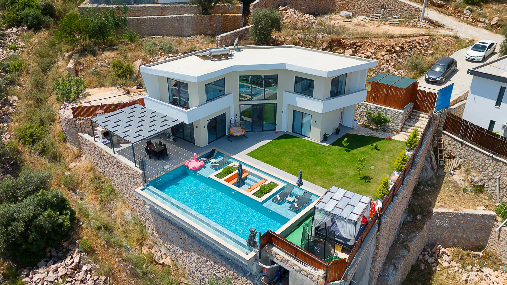

01
Özel havuz
10,5 × 3,5 mKorunaklı · 150 cm derinlik
VİLLA HAKKINDA
Kalkan’daki Villa Glass House’u keşfedin. Galeriyi inceleyin, konaklama bilgilerine göz atın ve tarih ile güncel fiyatlar için ev sahibiyle doğrudan iletişime geçin. Galeride Villa Glass House’un gerçek fotoğrafları yer almaktadır. Doğrulanmış özellikler eklenecektir.
Fotoğraf ve bilgiler işletmeci tarafından güncellenir.
KONAKLAMA
Kalkan'daki konaklamanız için önemli bilgiler, sade ve anlaşılır biçimde bir arada.
Özel havuz
10,5 × 3,5 mKorunaklı · 150 cm derinlik
Yatak düzeni
2 yatak odası · 4 misafir1. oda: bir çift kişilik yatak · 2. oda: iki tek kişilik yatak (1. kat)
Giriş ve çıkış
Turizm amaçlı kiralama belgesi
07-11288Konaklama belge numarası
KONFOR & KEYİF
Havuz başında geçirilen sakin anlardan evin içindeki konfora kadar ihtiyacınız olan detaylar.
KONAKLAMA REHBERİ
Rahat bir konaklama için kurallar, dahil olan hizmetler ve diğer ayrıntılar.
Girişte fotoğraflı kimlik belgesi istenir. Tahmini varış saatinizi önceden bildirmeniz gerekir.
KONUM
Antalya'nın Kaş ilçesinde, doğayla iç içe Yeşilköy bölgesinde.

YEŞİLKÖY · KALKANYeşilköy, Kalkan, Kaş, Antalya, Türkiye
Villanın kesin adresi ve yol tarifi için bizimle iletişime geçebilirsiniz.
Yeşilköy bölgesini Google Haritalar'da görüntüleKonaklamanızı planlayın
Tarihlerinizi doğrudan işletmeciye iletin. Yanıt gelmeden müsaitlik kesinleşmiş sayılmaz.
İlan referansında gecelik 6.000 TL'den başlayan fiyat belirtilmiştir. Bu tutar güncel teklif değildir; kesin fiyatı bize sorabilirsiniz.
FAQ
İletişim bilgileri ayarlandığında tarihlerinizi form üzerinden gönderin. Müsaitlik işletmeci tarafından onaylanmalıdır.
Evet. Bu galeri, ev sahibinin paylaştığı Villa Glass House fotoğraflarını göstermektedir.
Villa Antalya’nın Kalkan bölgesindedir. Kesin konum işletmeci tarafından paylaşılır.
Hayır. İşletmeci tarih ve koşulları onaylayana kadar gönderilen mesaj rezervasyon değildir.